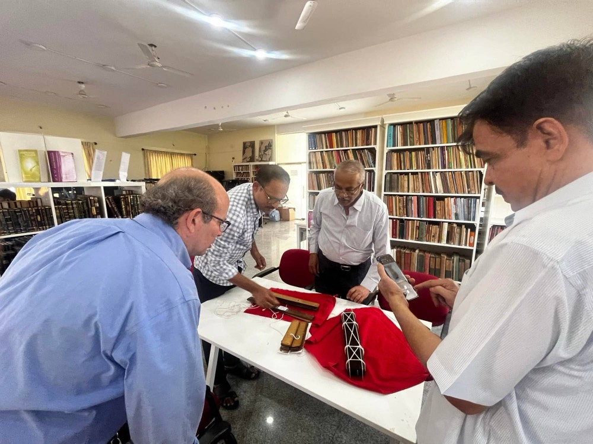

Digitisation
How a book gets from the shelf to a searchable page.


01
Intake and assessment
Logged with a unique ID. Fragile items are flagged before anything is touched.
02
Metadata first
Title, author, language, subject and condition recorded, so it is findable the moment it is online.
03
Scan on open hardware
Overhead twin-camera rigs capture both facing pages at once.
04
OCR with Repub
Indian scripts read into Unicode text, hOCR and a searchable PDF.
05
Quality control
Every image checked for sharpness, exposure and completeness.
06
Publish
Public domain to the Internet Archive; in-copyright works within the law.
15self-built scanners
5–10kpages per scanner a day
15 lakhpages a month, at capacity
1.3M+items in Jai Gyan
20+languages, incl. 60,000+ Sanskrit books
Who can read whatPublic domain → open onlinePrint-disabled → Braille & DAISYIn-copyright → via the owning library
CentresBengaluru · main centreMysuru · 18,000 books, 1,000 archives (MoU, Jul 2026)